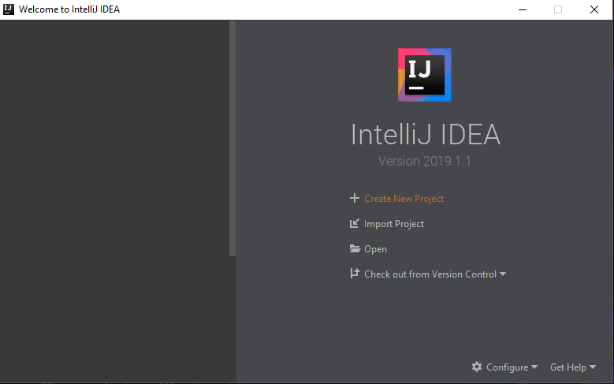
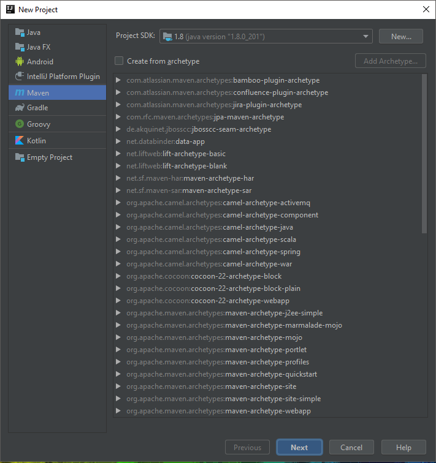
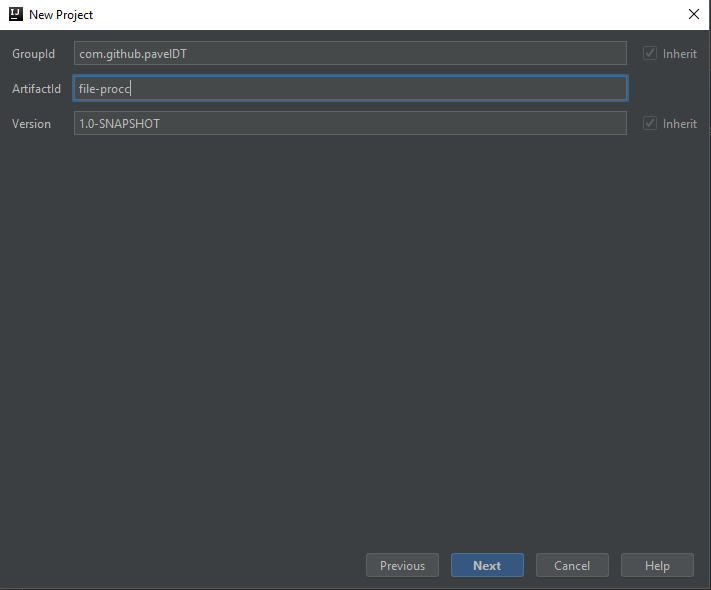
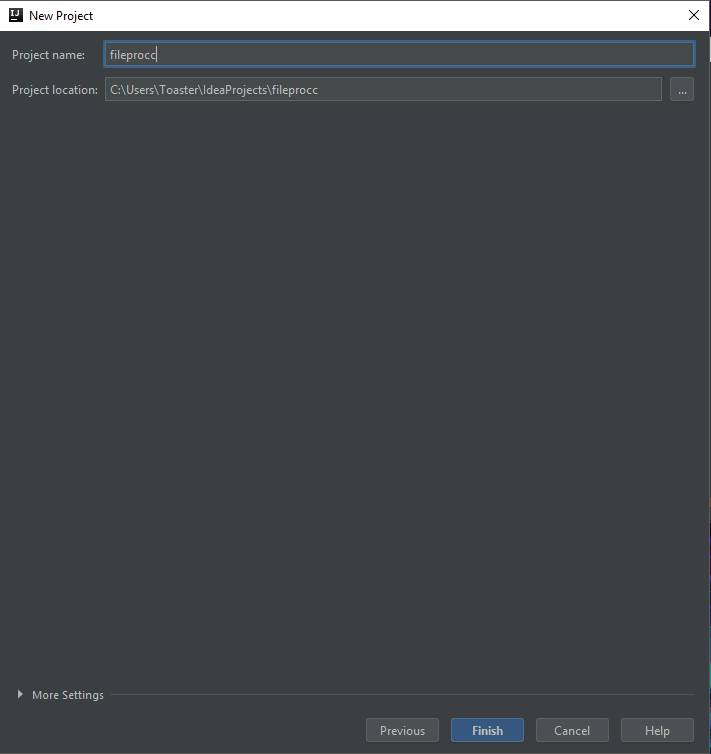

IntelliJ IDEA
Added by Pavel, tagged under IntelliJ Java
IntelliJ IDEA is an integrated development environment written in Java for developing computer software. It is built and developed by JetBrains. This tutorial will demonstrate how to set up a new project and import the Apache Commons IO library using Maven. Maven is a build tool used for Java projects that allows users to import libraries from a online based repository known as the Central Repository. The Apache Commons IO library contains utility classes for file manipulation, stream implementations, and much more.
Start IntelliJ
Let's begin by starting IntelliJ, preferably in 64-bit mode but either 32 or 64 bits will work just fine. You can do this by simply double-clicking the IntelliJ icon from the Desktop. If you have issues running IntelliJ check out this tutorial by Jetbrains, the IntelliJ creators, for some guidance.
Create New Project
Once the IDE has started, select the "Create New Project" option.
This will display a number of options. Select a Maven project and click next.
Assign Group and Articat IDs
The groupId uniquely identifies your project across all projects in the Maven central repository. A group ID should follow Java's package name rules. This means it starts with a reversed domain name you control. For example: "org.apache.maven" or "org.apache.commons". Maven does not enforce this rule. There are many legacy projects that do not follow this convention and instead use single word group IDs. However, it will be difficult to get a new single word group ID approved for inclusion in the Maven Central repository.
The artifactId is the name of the jar without version. If you created it, then you can choose whatever name you want with lowercase letters and no strange symbols. If it's a third party jar, you have to take the name of the jar as it's distributed. For example "maven" or "commons-math".
Basically, be creative, the project id has to be unique if you want to publish your code as a library.
Name Your Project
The name of the project will be used for the local files created on the machine by IntelliJ. The project can be renamed at a later stage if necessary. Pick something simple without emojis or symbols as these cause compatibility issues between different operating systems.
Add Apache Commons IO Dependency
Open the "pom.xml" file. The pom.xml file contains information of project and configuration information for the maven to build the project such as dependencies, build directory etc. The "<dependencies>" tag will have to be added to the file.
The dependency from Maven central for Apache Commons IO will be added inside of the <dependencies> tag. This tutorial will target versio 2.5 of the library. The dependency is available below:
<!-- https://mvnrepository.com/artifact/commons-io/commons-io -->
<dependency>
<groupId>commons-io</groupId>
<artifactId>commons-io</artifactId>
<version>2.5</version>
</dependency>
Create a Class
Select the folder where you wish to add the file, preferrably in "src/main/java". Right-click on the folder, select "New" and click on "Java Class". Give the class a name and click "OK". This will create the class.
Write some Code
Make sure to import the Apache Commons IO utility classes, some demo code is supplied below.
import org.apache.commons.io.FileUtils;
import java.io.File;
import java.io.IOException;
public class SimpleIO {
public static void main(String[] args) throws IOException {
File file = new File("simple.txt");
FileUtils.writeStringToFile(file, "This is some data...", "UTF8");
}
}
Let's summarise the process.
- Start IntelliJ
- Select "Create New Project"
- Select "Maven" and click Next
- Give the project a GroupID and a ArtifactID, optionally assign a version to the project.
- Name your project and optionally select it's location and select "Finish".
- Add the Apache Commons IO dependency to "pom.xml" in the dependencies tag.
- Create a new class that will be used for simple file manipulation.
- Write a main function that will create a new file and write to it.